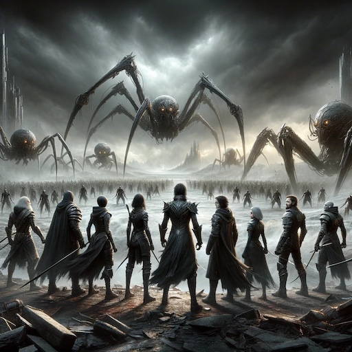

This past Monday evening, from a tiny cabin in Dahlonega, GA, I turned to my wife and said: “What a week, huh?”
We had a much-needed mini-vacation in the middle of the week to recoup and relax. It wasn’t nearly long enough to fully come down from the cortisol high but it at least jump-started the process. We even got a hike in, and did some stargazing. Even as relatively small as Athens is, there’s still a lot of light pollution, the lack of which is breathtaking if you can get a little further out.
I’ve felt guilty—for many reasons; there’s never a shortage, but in this case because I’d originally wanted to participate in this year’s Advent of Code. I was introduced to it two years ago, too late to finish it completely, but at the time I enjoyed it. Last year I was too burned out to get more than a few days in, so I was feeling particularly motivated this year.
But then the end-of-semester shenanigans were an order of magnitude worse than expected, and December entered with a bang and from the mountains I lamented not having logged a single activity.
Then I came across December Adventure.
I loved the main idea: the goal is just to write a little bit of code, every day, in the month of December. Or, really, to make progress on any project or projects, a little bit each day.
So consider this not only my inaugural #DecemberAdventure post, but a bit of a catch-up on the things I’ve been doing that have brought me a tiny bit of joy in the dismally oversaturated realities of the past couple months.
RetroPie, redux
Astute readers here may recall that this is something I’d already done a few years back (ok, several years back, geez). However, that was a Pi 3B+, which did ok with NES and SNES games, but ground to a complete standstill on any 3D games—N64 was beyond it.
Armed with a Pi 4B with 4GB of RAM, I sought to bring RetroPie back! I’d also seen in the documentation that the Nintendo Switch Pro controllers were supported, so getting that working was another goal of mine (rather than the generic USB controllers I’d used last time).
A few other minor changes from last time: now I had a cool mini-SNES enclosure for the Pi, which came with room for a single fan to help keep things cool. I was pretty sure the fan was overkill, but I figured, what the heck. I also actually wired the Pi to ethernet, rather than relying on wifi like last time. It took a little bit of adjusting, but it was a change I’d wanted to make to our home network backbone anyway.
The result: a snazzy new RetroPie!
I did still run into some issues with getting the Nintendo Switch Pro controller working. Specifically, the Bluetooth: this issue in the discussion forum mirrored my problems exactly. I could turn on diagnostics for the Pi and see that it was detecting every single button press and stick movement, but for some reason those changes weren’t being propagated to the emulator software.
In the end, I plugged the Pro controllers into the back of the Pi, and they worked beautifully. It just meant I had to sit on the floor, feet from my TV, in order to play. Like the days of Yore, I suppose.
ChatGPT and DALL-E, for “science”
I recently started a new collaboration investigating the utility of commercial LLMs—specifically, the new GPT 4 with vision—in understanding, deciphering, and analyzing biomedical image data.
I’ve thrown a little bit of my [OPENLY AVAILABLE] data at it. To use the academic lingo: the performance to date has been decidedly unimpressive. But work continues.
Nevertheless, it’s also given me the opportunity to play around again with image generators (I stopped paying Midjourney a long time ago). In particular, I’ve been keen to see if ChatGPT’s integration with DALL-E has allowed for better iteration on images—carrying over context from previous image prompts to iterate on and improve subsequent images.
With Midjourney, iteration often entailed copy/pasting the previous prompt and making subtle changes that I thought would give me what I was looking for. Here, I was hopeful that, given the conversational interface with ChatGPT, I could now just tweak the things I wanted to change by “having a chat.”
Yet again, I was disappointed. But I did come up with some interesting mash-ups. Inspired by a recent keynote speech at our Institute of AI Symposium, I wanted to see what favorite universes of mine I could combine.
{kind=link}
If anyone has read any of Brandon Sanderson’s Stormlight Archive, they will immediately recognize the ten Heralds. For those who haven’t: think of the Heralds as deeply flawed and damaged, likely insane superheroes. Maybe not “The Boys” level awful, but certainly not your aw-shucks-go-team plucky Avengers.
Well, I tried putting them in different situations. First I tried oil paintings in the medieval ages.

In both cases, you may notice… there are more than 10 individuals. I couldn’t find a way to guarantee the number I was asking for, as you’ll see.
Next I tried the Heralds in the Lego universe.
Again, it seems as though there are 11 people? And what’s with the bird motif, suddenly? I said nothing about birds.
This continues when I tried putting the Heralds in the Marvel Avengers universe.
Again, I count 11 individuals, with no fewer than three wearing Iron Man-like powered suits. You can’t all be Iron Man!
Once more, the weird bird motif shows up, despite no mention of birds in the prompt (or any part of the ChatGPT discussion thread). There also only seem to be 9? And Captain America’s shield is just… floating there. I do love that Iron Spider suit, though; I wonder which Herald that is.
From here I tried pitting the Heralds against Legend of Zelda: Tears of the Kingdom enemies, but set in The Expanse universe.
As far as I can tell, there are only 5 Heralds, but otherwise this picture is pretty cool. I love how Mordor-esque the landscape is, and even though the robot army bears no resemblance to anything in Tears of the Kingdom, it’s still pretty neat.
The second attempt was a lot closer to what I was looking for:

Still only 9 Heralds as far as I can tell, and again the humanoid robots aren’t recognizable, BUT I love the giant arachnid enemies. I can definitely see that as an Expanse-ification of the classic Breath of the Wild Guardians.
From here I tried a smattering of other things.

Each one of these deviates significantly from what I would have expected, which is not a problem per se. I would say that they do seem to have a tendency to gravitate toward certain modes, and it’s really hard to pull the image generators off those modes.
Rae rae rae your robot
I backed the Luxonis kickstarter last year for the rae robots (Robotics Access for Everyone), and since getting them, they’ve been… tricky.
The forums are full of folks just trying to get them working, and the associated documentation is extremely sparse to entirely nonexistent. It’s a brand-new product, but the team definitely hasn’t had a chance to catch up on the documentation side.
I ended up getting things working, but it required multiple lines of advice combined in different ways.
Firstly, I started with the Advanced (manual) setup, and this… ended up being impossible, at least if you want your rae to show up on Robothub (which, currently, is the only way to install and run apps). I’ll write a later post documenting this side, but suffice to say, it just doesn’t work.
Secondly, I couldn’t get the hard reset button on the bottom of the rae to work. I may have been doing it wrong. But I found this excellent post outlining a “soft reset” that worked perfectly.
Thirdly, from the moment I pushed the power button on the rae, I just pointed it at the QR code from Robothub (linked from the Cloud setup instructions) and held it there for several minutes. Eventually, the lights started flashing blue at regular intervals and the screen indicated it was connecting to my local wifi network. The rest worked as advertised (even if the lights turn red, apparently this is a known bug).
I haven’t done anything else with them yet, except name them.
What’s next?
Consider this my first official entry into #DecemberAdventure, and maybe retroactively through the whole month of December so far.
After today, I’ll try to post regular updates on Mastodon about my #DecemberAdventure activities. Now the semester is largely over—there are still some outstanding obligations, but without class there should be more time for tinkering.
And relaxing.

Citation
@online{quinn2023,
author = {Quinn, Shannon},
title = {Advent of {Adventure}},
date = {2023-12-08},
url = {https://magsol.github.io/2023-12-08-advent-of-adventure},
langid = {en}
}